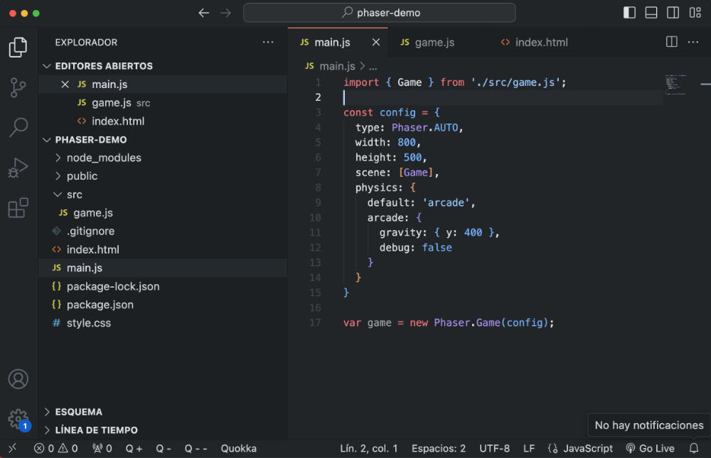

El desarrollo web es la columna vertebral de internet. HTML5 proporciona la estructura semántica necesaria para que los motores de búsqueda entiendan el contenido, mientras que CSS3 permite crear experiencias de usuario rápidas, accesibles y adaptables a cualquier dispositivo.
¿Por qué aprender HTML5 y CSS3 hoy en día?
HTML5 Semántico
Mejora el posicionamiento SEO y la accesibilidad mediante etiquetas estructuradas.
CSS3 Moderno
Facilita diseños fluidos con Flexbox, CSS Grid y animaciones sin sobrecargar la web.
Diseño Responsivo
Garantiza una visualización óptima en computadores, tabletas y teléfonos móviles.
Recursos Visuales y Enlaces

Si quieres profundizar más en el aprendizaje de estas tecnologías, puedes consultar la documentación oficial:
Explorar Documentación WebPreguntas frecuentes sobre desarrollo web
¿Qué diferencia hay entre Flexbox y CSS Grid?
Flexbox está diseñado para alinear elementos en una sola dimensión (fila o columna), mientras que CSS Grid permite construir cuadrículas completas en dos dimensiones (filas y columnas simultáneamente).
¿Por qué son importantes las Media Queries?
Permiten aplicar reglas CSS específicas según el ancho de la pantalla del dispositivo, evitando barras de desplazamiento horizontal.